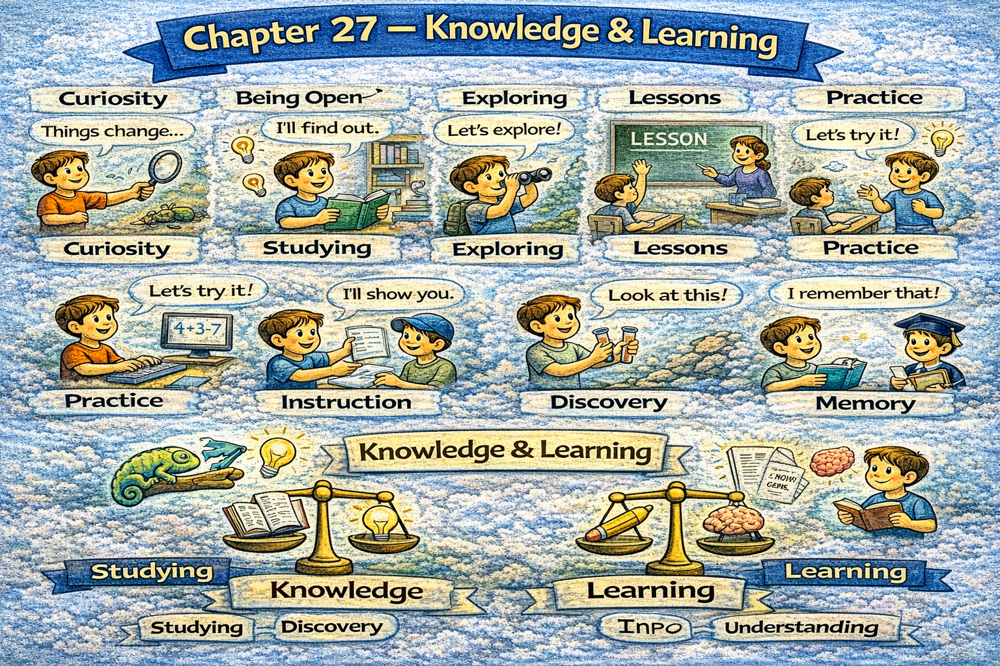

Chapter 27 — Knowledge & Learning

Micro Scene 1 — What Is Knowledge?
1️⃣ Scene Text
Knowledge is structured understanding derived from evidence and interpretation.
Information becomes knowledge when it is organized meaningfully.
If data remains unexamined, it does not produce insight.
Experience contributes to knowledge through reflection.
I distinguish between assumption and verified conclusion.
Knowledge requires context to remain useful.
When patterns are recognized, understanding deepens.
Belief without evidence weakens reliability.
Interpretation shapes meaning.
Knowledge evolves as new information emerges.
Learning refines judgment over time.
2️⃣ Core Verb Pool
derive
organize
remain
produce
contribute
distinguish
require
recognize
weaken
shape
evolve
emerge
refine
3️⃣ Structure Patterns
X is derived from + noun
If X + verb, Y + verb
X contributes to Y through + noun
I distinguish between A and B
When X + verb, Y + verb
X evolves as + clause
4️⃣ Replace & Extend
Replace assumption:
Assumption lacks verification.
→ Hypothesis requires testing.
→ Belief requires evidence.
Replace evolution:
Knowledge expands with inquiry.
→ Understanding deepens with reflection.
→ Insight grows through iteration.
Replace reliability:
Evidence strengthens credibility.
→ Verification stabilizes confidence.
→ Context increases accuracy.
5️⃣ Spoken Mode
Information isn’t knowledge until it’s organized.
If you don’t examine data, you don’t gain insight.
Assumptions aren’t the same as verified conclusions.
Learning improves judgment.
🔎 Structural Notes
• Knowledge = structured information + interpretation.
• Assumption vs verification contrast.
• Learning modifies certainty.
Micro Scene 2 — Learning Through Experience
1️⃣ Scene Text
Experience becomes valuable only when it is examined critically.
Repeated exposure alone does not guarantee improvement.
If reflection follows action, insight develops.
Mistakes contribute to learning when they are analyzed honestly.
I extract principles from specific outcomes.
Practice refines skill through iteration.
When feedback accompanies experience, growth accelerates.
Unexamined repetition reinforces error.
Learning requires both action and evaluation.
Experience provides data; reflection produces understanding.
Skill matures through deliberate practice.
2️⃣ Core Verb Pool
become
examine
guarantee
follow
develop
contribute
analyze
extract
refine
accompany
accelerate
reinforce
require
produce
mature
3️⃣ Structure Patterns
X becomes + adjective when + clause
If X + verb, Y + verb
X contributes to Y when + clause
When X + verb, Y + verb
X requires both A and B
X produces Y
4️⃣ Replace & Extend
Replace reflection:
If I review my performance…
→ If outcomes are evaluated…
→ If results are discussed openly…
Replace error:
Mistakes reveal patterns.
→ Failure exposes assumptions.
→ Error highlights gaps.
Replace practice:
Practice builds fluency.
→ Repetition increases precision.
→ Iteration improves execution.
5️⃣ Spoken Mode
Experience alone doesn’t teach you — reflection does.
If you review what happened, you improve.
Mistakes help when you analyze them.
Practice makes skill sharper.
🔎 Structural Notes
• Experience ≠ automatic learning.
• Reflection converts action into insight.
• Deliberate practice accelerates mastery.
Micro Scene 3 — Models & Mental Frameworks
1️⃣ Scene Text
Models simplify complexity by highlighting essential relationships.
A mental framework organizes information into coherent structure.
If a model fits reality poorly, prediction fails.
I use models to interpret patterns rather than memorize facts.
All models are approximations, not exact representations.
When assumptions remain implicit, error increases.
Explicit frameworks improve clarity and consistency.
Models guide attention toward relevant variables.
If a framework is outdated, judgment becomes distorted.
Effective learning involves revising mental models.
Understanding deepens when structure replaces randomness.
2️⃣ Core Verb Pool
simplify
highlight
organize
fit
fail
interpret
approximate
remain
increase
improve
guide
become
revise
replace
deepen
3️⃣ Structure Patterns
X simplifies Y by + verb-ing
If X + verb, Y + verb
X is not A; it is B
When X + verb, Y + verb
X involves + verb-ing
4️⃣ Replace & Extend
Replace approximation:
A model approximates reality.
→ A framework captures structure.
→ A theory abstracts complexity.
Replace distortion:
If assumptions are wrong…
→ If the model is incomplete…
→ If variables are ignored…
Replace revision:
Learning requires updating models.
→ Insight requires structural revision.
→ Growth requires conceptual adjustment.
5️⃣ Spoken Mode
Models help you see patterns.
They’re not perfect — just useful.
If your model is wrong, your prediction fails.
Learning means updating your mental framework.
🔎 Structural Notes
• “approximation” signals epistemic humility.
• Models guide attention, not truth.
• Revision sustains accuracy.
Micro Scene 4 — Bias & Distortion
1️⃣ Scene Text
Bias shapes perception before analysis begins.
Cognitive distortion filters information selectively.
If evidence contradicts expectation, discomfort increases.
Confirmation bias reinforces existing belief.
I question whether my interpretation reflects fact or preference.
When alternative explanations are ignored, error compounds.
Bias often operates unconsciously.
Awareness reduces distortion.
If assumptions remain unchallenged, judgment narrows.
Objective analysis requires deliberate correction.
Learning improves when bias is acknowledged explicitly.
2️⃣ Core Verb Pool
shape
filter
contradict
increase
reinforce
question
reflect
ignore
compound
operate
reduce
remain
narrow
require
improve
acknowledge
3️⃣ Structure Patterns
X shapes Y before + clause
If X + verb, Y + verb
When X + verb, Y + verb
X requires + noun
X improves when + clause
4️⃣ Replace & Extend
Replace confirmation bias:
If I only seek agreement…
→ If I ignore conflicting evidence…
→ If I prioritize comfort over accuracy…
Replace narrowing:
Unchecked bias narrows perspective.
→ Selective attention limits insight.
→ Preference distorts evaluation.
Replace correction:
Critical review reduces bias.
→ Diverse input improves objectivity.
→ Questioning assumptions increases clarity.
5️⃣ Spoken Mode
Bias affects how we see things.
If I only look for proof I’m right, I stay wrong.
Being aware of bias makes thinking clearer.
You have to challenge your own assumptions.
🔎 Structural Notes
• Bias operates before conscious reasoning.
• Confirmation bias = reinforcement loop.
• Deliberate correction improves accuracy.
Micro Scene 5 — Uncertainty & Probabilistic Thinking
1️⃣ Scene Text
Not all knowledge is absolute; much of it is probabilistic.
Uncertainty does not eliminate understanding; it reframes it.
If evidence is incomplete, confidence should adjust proportionally.
Probability expresses likelihood rather than certainty.
I evaluate conclusions in terms of degrees, not absolutes.
When new data emerges, probability shifts.
Overconfidence distorts judgment.
If risk is underestimated, consequences intensify.
Rational thinking accommodates uncertainty.
Learning refines probability over time.
Confidence should track evidence strength.
2️⃣ Core Verb Pool
eliminate
reframe
adjust
express
evaluate
shift
distort
underestimate
intensify
accommodate
refine
track
3️⃣ Structure Patterns
Not all X are Y
If X + verb, Y + verb
X expresses A rather than B
When X + verb, Y + verb
X should + verb
X tracks Y
4️⃣ Replace & Extend
Replace likelihood:
Probability indicates likelihood.
→ Estimates reflect uncertainty.
→ Forecasts express confidence range.
Replace adjustment:
If evidence strengthens…
→ If uncertainty increases…
→ If new information appears…
Replace accommodation:
Rational judgment tolerates ambiguity.
→ Good decisions consider probability.
→ Clear thinking accepts uncertainty.
5️⃣ Spoken Mode
Not everything is certain.
Confidence should match the evidence.
If new data appears, adjust your estimate.
Good thinking works with probability, not absolutes.
🔎 Structural Notes
• “Not all…” expresses epistemic nuance.
• Probability ≠ guess; it = structured uncertainty.
• Confidence should scale with evidence.
Micro Scene 6 — Continuous Learning & Revision
1️⃣ Scene Text
Continuous learning prevents intellectual stagnation.
Knowledge must be revised as new evidence appears.
If beliefs remain fixed despite contradiction, growth stops.
Revision is a sign of strength, not weakness.
I update conclusions when underlying assumptions change.
When feedback is integrated systematically, understanding improves.
Rigid certainty resists correction.
Learning requires openness to refinement.
If models fail repeatedly, they must be redesigned.
Intellectual maturity balances confidence with flexibility.
Progress depends on deliberate revision.
2️⃣ Core Verb Pool
prevent
revise
appear
remain
stop
update
change
integrate
improve
resist
require
fail
redesign
balance
depend
3️⃣ Structure Patterns
X prevents Y
If X + verb, Y + verb
X is a sign of A, not B
When X + verb, Y + verb
X requires + noun
X depends on + noun
4️⃣ Replace & Extend
Replace revision:
If evidence shifts…
→ If assumptions collapse…
→ If results contradict expectation…
Replace redesign:
Outdated models require revision.
→ Flawed frameworks demand replacement.
→ Failed strategies require restructuring.
Replace balance:
Strong thinking balances certainty and doubt.
→ Mature judgment balances conviction and openness.
→ Insight requires humility.
5️⃣ Spoken Mode
If new evidence appears, update your thinking.
Changing your mind isn’t weakness — it’s growth.
If your model keeps failing, redesign it.
Learning means staying flexible.
🔎 Structural Notes
• Revision signals cognitive maturity.
• Model failure → redesign trigger.
• Confidence must remain adjustable.
🔸 Integration Scene — Knowledge Structure
Knowledge organizes information.
Experience becomes insight through reflection.
Models simplify complexity.
Bias distorts perception.
Probability expresses uncertainty.
Learning refines judgment.
Assumptions require verification.
Evidence strengthens reliability.
Revision updates understanding.
Feedback improves accuracy.
Certainty must scale with evidence.
Frameworks guide interpretation.
Growth depends on openness.
Learning transforms error into progress.
Understanding evolves over time.
Knowledge stabilizes decision-making.
Integration Verb Focus
organize
interpret
verify
refine
revise
update
evaluate
balance